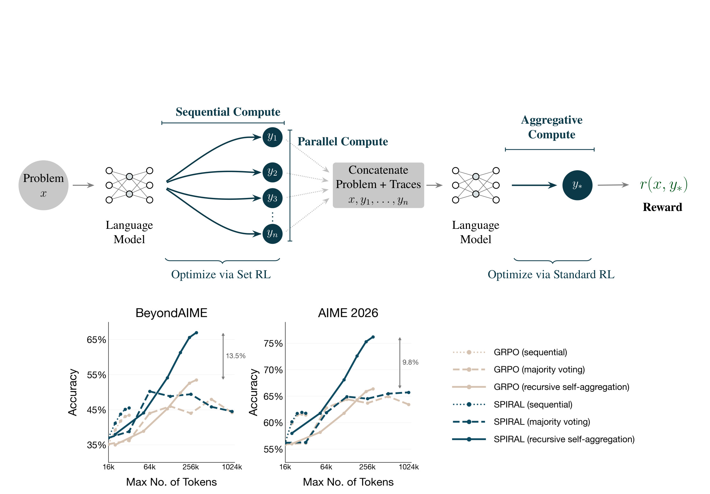
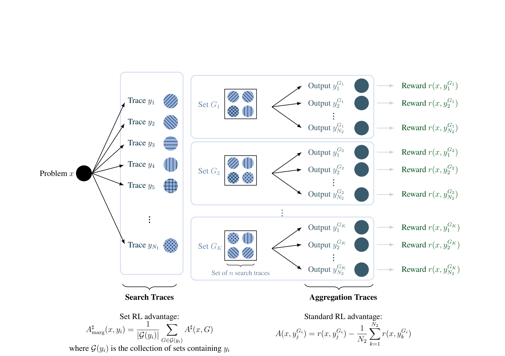
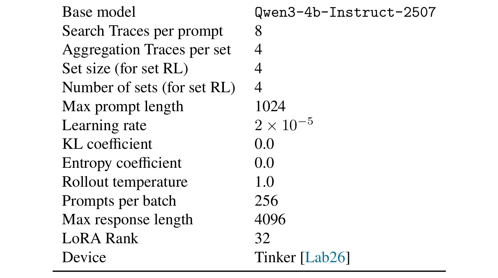
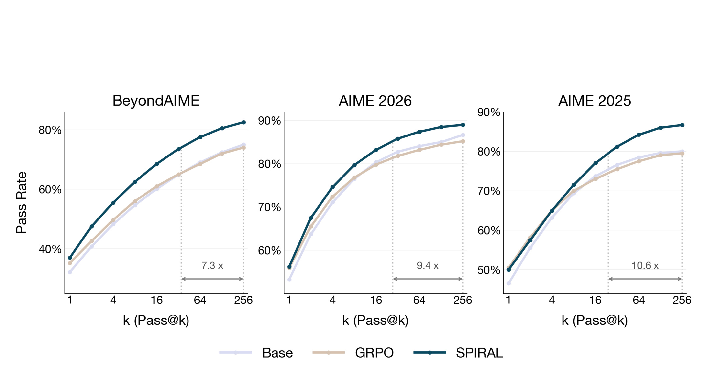
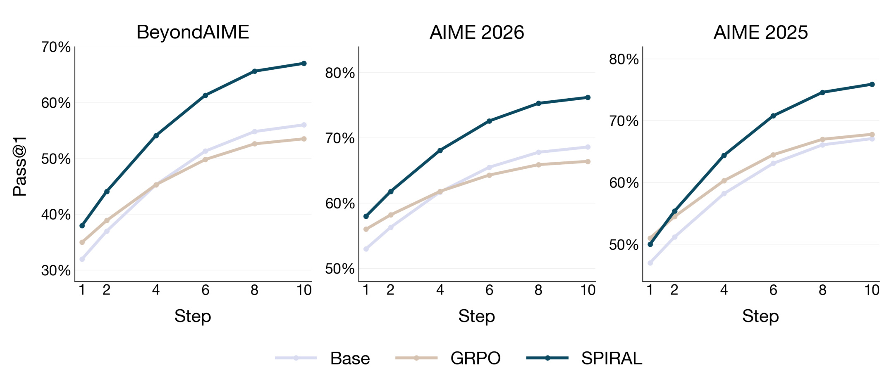
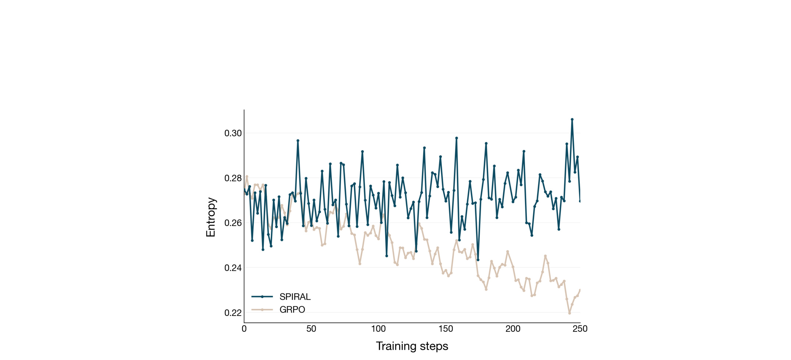
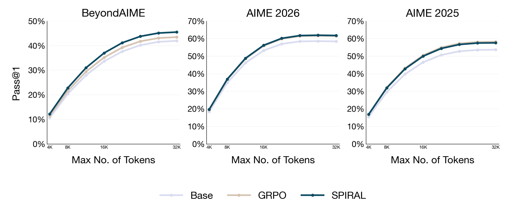
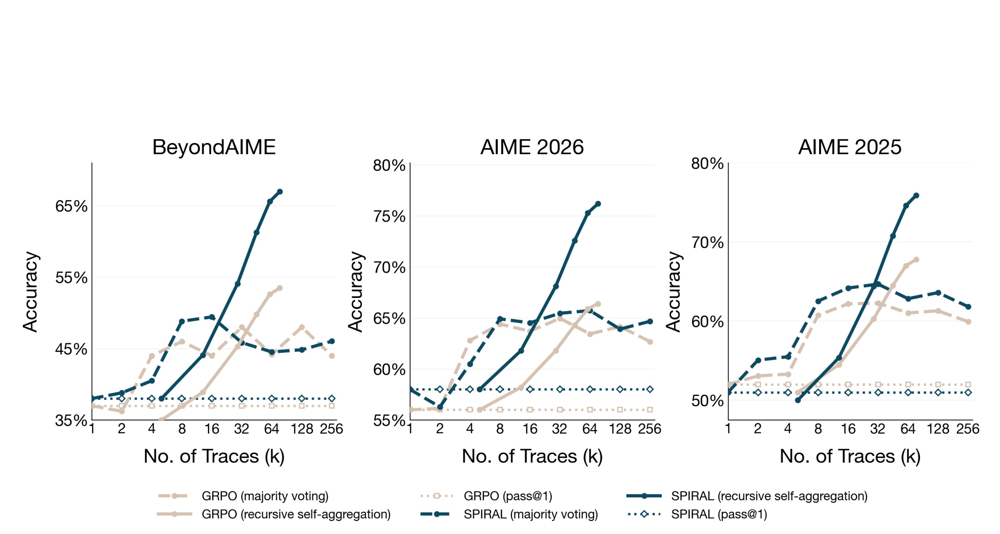
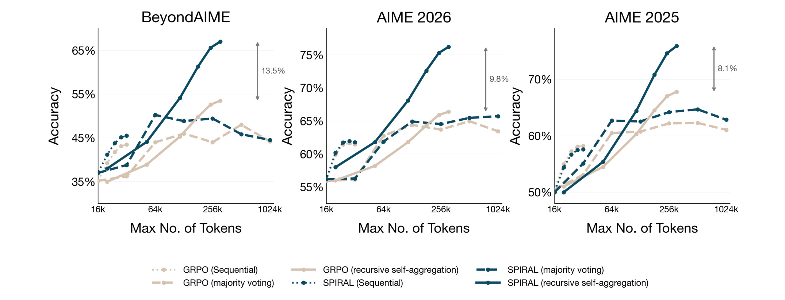

SPIRAL: Learning to Search and Aggregate 是 Stanford University 团队的一篇 ongoing work，作者包括 Jubayer Ibn Hamid、Ifdita Hasan Orney、Michael Y. Li、Omar Shaikh、Yoonho Lee、Dorsa Sadigh、Chelsea Finn 和 Noah Goodman。论文的唯一入口链接是 arXiv:2606.23595。我在 arXiv 页面和 PDF 中没有核验到独立代码仓库、项目页、模型卡或数据集页，因此这份笔记只把论文原文和附录作为事实来源。本文关注的不是“再把一条思维链写长一点”，而是如何让同一个语言模型在训练时就学会把顺序推理、并行搜索和跨轨迹聚合这三类测试时计算资源组织成一个可优化的推理流水线。
测试时推理能力的提升并不只来自更长的一条思维链，还来自并行探索和跨轨迹聚合；但现有后训练几乎只奖励单条 trace 的最终答案，模型没有学会怎样协调 sequential、parallel、aggregative 三类计算，因此额外推理预算常被冗余尝试、错误验证或手写脚手架消耗掉。
1. 背景和问题
这篇论文的起点是一个很具体的训练-测试错配。现在很多 reasoning model 在测试时会被放进复杂的 scaffold：同一道题可能先采样多条候选思路，再用投票、验证器、judge、self-refinement 或 recursive self-aggregation 做过滤和综合；工程上也常把更长的上下文、更大的采样数和多轮反思拼成一个推理 harness。但是模型在后训练阶段通常接受的是另一种任务：给一个 prompt，生成一条 chain-of-thought 或一条最终答案，再根据这条生成的最终结果拿 reward。换句话说，训练阶段优化的是单条轨迹，测试阶段消耗的却是多条轨迹和聚合过程。
作者把测试时计算拆成三类 primitive。第一类是 sequential compute，也就是一条 trace 内部的推理 token、局部验证、修正、回溯、工具调用和中间子目标。它对应我们熟悉的“让模型多想一会儿”。第二类是 parallel compute，即同一个问题下独立采样多条 reasoning traces，让模型从不同假设、不同证明路径或不同计算切入点探索解空间。第三类是 aggregative compute，即模型条件化原问题和多条候选 trace，审计、筛选、组合其中有效片段，再生成一个新的最终答案。论文的核心判断是：这三类 primitive 不是互相替代，而是应该被模型共同学习、共同协调。
为什么只训练 sequential compute 不够？论文在 Introduction 里列了三个失败模式。首先，单条长 CoT 并不保证模型把 token 用在关键推理处；它可能把简单代数步骤写得很详细，却在真正决定性的逻辑跃迁上草草带过。其次，parallel sampling 如果没有训练信号鼓励多样性，很容易采出高度相关的冗余尝试；看起来用了 k 次机会，实际只是在重复同一个错误模式。最后，aggregative compute 不是把候选答案拼接起来那么简单；模型需要判断哪些候选 trace 的中间结论可用，哪些步骤虽然自信但错了，哪些不完整 trace 仍然提供了可复用线索。没有训练过聚合的模型，常常会忽略候选、机械投票，或者在候选互相冲突时无法做基于原题的再推理。
这个问题和近期大模型训练趋势关系很近。GRPO、R1-style RL 等方法让模型在单条推理链上形成更强的自我验证和延迟回答能力，但它们并没有直接告诉模型：在测试时如果给你 8 条候选轨迹，你应该让每条轨迹探索什么、应该如何组合它们、以及什么时候应该放弃坏候选重新推理。现有的 AlphaEvolve、Mixture-of-Agents、best-of-N、self-consistency、recursive self-aggregation 等系统，往往把这种策略写在外部 harness 里。SPIRAL 的贡献就是把这个 harness 的关键结构放进训练目标：不是只训练“答案对不对”，而是训练“搜索集合能不能帮助聚合器得到对的答案”。
这也解释了论文为什么引入 set reinforcement learning。对于一组搜索 trace，单独看某一条 trace 可能并不正确；但它可能提供一个关键引理、一个有用变换、一个错误但能暴露陷阱的反例，最终帮助 aggregation trace 合成正确答案。传统 RL 会倾向于给每条样本独立 credit：正确样本提高概率，错误样本降低概率。SPIRAL 认为这对聚合式推理不合适，因为集合的价值不是各元素独立价值的简单和。某条 trace 是否有用，取决于它和其他 trace 一起放进聚合器时能否提高最终 reward。因此，search traces 需要集合级 credit assignment，而 aggregation traces 仍可用标准 RL 直接根据最终答案 reward 更新。
从研究定位看，SPIRAL 不是提出一个新的数学题 benchmark，也不是单纯做推理 token 长度 scaling。它更像是在回答一个训练机制问题：如果未来推理系统天然会用并行采样、递归聚合、外部验证、长上下文预算，那模型训练是否应该提前暴露这些测试时 primitive？作者的答案是肯定的，并且用数学推理任务做了早期实证：在同等训练 token 预算下，SPIRAL 相比 GRPO 更会利用 parallel 和 aggregative compute，尤其在 recursive self-aggregation 这类需要模型主动聚合候选轨迹的设置中更明显。
2. 方法
2.1 三类推理计算 primitive 与训练-测试错配
SPIRAL 的方法章先把推理计算的粒度说清楚。Sequential compute 发生在单条生成内部，它让模型在同一条轨迹里分解问题、提出中间目标、验证局部结论、修正错误或调用工具。Parallel compute 发生在同一个 prompt 的多次独立采样之间，它试图让不同 trace 覆盖不同的解题路径。Aggregative compute 则发生在候选 trace 之后，模型读取原问题和候选集合，审计候选、识别可用片段，再合成一个新的最终输出。SPIRAL 的重要性在于，它不把这三件事看成测试时外部工程，而是把它们变成训练期间直接优化的推理流水线。

Figure 1 的上半部分把这条流水线画得很直观：输入问题 $x$ 先进入语言模型，模型在每条 trace 内使用 sequential compute 形成 $y_1, y_2, \ldots, y_n$；这些 trace 是 parallel compute 的结果；随后系统把问题和多条 trace 拼接，让模型再生成聚合 trace $y_$，并只根据最终 reward $r(x,y_)$ 更新。图中左侧的 “Optimize via Set RL” 和右侧的 “Optimize via Standard RL” 是整篇论文的关键分工：并行搜索 trace 不用单条 reward 更新，而是用集合级 credit；聚合 trace 直接以自己的最终答案 reward 更新。下半部分的曲线提前给出实验信号：当三类 primitive 同时被扩展时，SPIRAL 的 recursive self-aggregation 曲线明显强于 GRPO。这里要注意，图中不是把 sequential、parallel、aggregation 作为三个互斥方案，而是强调一个统一模型如何在不同阶段消耗不同形式的推理预算。用公式写，SPIRAL 想优化的是下面这个总目标：
符号解释：$x$ 是原始问题，$\pi_\theta$ 是生成搜索 trace 的策略，$y_{1:n}$ 表示同一问题下采样出的 $n$ 条候选推理轨迹；$\pi_\phi$ 是聚合策略，它在看到原问题和候选集合后生成 $y^$；$r(x,y^)$ 是只评价最终聚合答案的 reward。这个式子有两个重点。第一，reward 不直接评价每条搜索 trace 的最终答案，而是评价聚合后的最终答案。第二，$\phi$ 可以等于 $\theta$，即同一个模型既做搜索又做聚合；也可以拆成两个模型，论文附录 B 给了不同模型版本的梯度分解。
2.2 两级生成：search traces 与 aggregation traces
训练时，SPIRAL 不是简单采一组 trace 再聚合一次，而是构造一个两级采样过程。对每个问题 $x$，模型先采样 $N_1$ 条 search traces。然后从这 $N_1$ 条 trace 中抽取 $K$ 个大小为 $n$ 的集合，每个集合 $G_i$ 包含 $n$ 条不同 trace。接着，模型对每个集合再采样 $N_2$ 条 aggregation traces，也就是 $y^{G_i}1, \ldots, y^{G_i}$。最后只在这些 aggregation traces 的最终答案上计算 reward。

Figure 2 是论文最需要细读的一张方法图。左侧的 “Search Traces” 表示 $N_1$ 条独立候选，每条 trace 有自己的顺序推理过程；中间的 $G_1, G_2, \ldots, G_K$ 表示从候选池里抽出的多个集合；右侧的 “Aggregation Traces” 表示每个集合都触发 $N_2$ 次聚合尝试，并且每条聚合尝试都拿到最终 reward。图底部的两个公式对应两类优势估计：search trace 用 $A^\sharp_{\mathrm{marg}}$，它来自所有包含这条 trace 的集合；aggregation trace 用普通的 centered advantage，在同一个集合内和其他聚合样本比较。这样做的直觉很重要：搜索阶段学的是“我这条 trace 放进不同集合时平均能不能帮上忙”，聚合阶段学的是“在给定候选集合下我这次合成是否比同集合其他合成更好”。这比直接对每条候选 trace 打对错标签更符合聚合任务，因为错误 trace 也可能提供有价值的中间信息。为了看懂这张图，还要注意作者的训练预算设计。SPIRAL 把每个问题的推理预算分到两层：一部分给 search traces，一部分给 aggregation traces。GRPO 的对照实验则把同样总 token 数放在单层生成里。这保证了后面的比较不是“SPIRAL 用了更多训练计算”，而是“同等训练计算被分配到不同 primitive 后，哪种训练目标更能支持测试时扩展”；也解释了后面实验为什么要分别报告 pass@k、recursive self-aggregation 和固定 token budget 曲线，因为这些曲线对应的不是同一种计算形态。
2.3 Set RL 如何训练 search traces
论文在 preliminaries 中回顾了 set reinforcement learning。语言模型形式的集合目标可以写成：
符号解释：$D$ 是问题分布，$y_{1:n}$ 是同一 prompt 下独立采样的 $n$ 条生成，$f(x,y_{1:n})$ 是集合级目标函数。这里的关键限制是，$f$ 不能被拆成某个与 $\theta$ 无关的单样本函数 $g(x,y)$ 的期望，否则 set RL 就退化成标准 RL。SPIRAL 正是利用这一点：一个搜索集合的价值由聚合器基于整个集合生成最终答案后的 reward 决定，不能简单归因到其中某一条 trace。对应的策略梯度是：
符号解释：$\hat f(x)$ 是同一 prompt 上的集合级 baseline，$f(x,y_{1:n})-\hat f(x)$ 是整个集合共享的优势信号；$\nabla_\theta\log\pi_\theta(y_i\mid x)$ 是第 $i$ 条生成的 log-prob 梯度。这个式子说明，集合内所有 trace 共享同一个 scalar learning signal。它和标准 RL 最大的差别不是形式复杂，而是 credit assignment 的语义变了：模型不是被告知“这条 trace 单独对或错”，而是被告知“这个集合整体能不能让后续聚合成功”。SPIRAL 把集合目标具体化为：
符号解释：$f_{\mathrm{spiral}}$ 衡量的是给定一组 search traces 后，当前聚合模型能生成多高 reward 的最终答案。$y^*$ 不是集合里已有的某条 trace，而是新的 aggregation trace；因此 SPIRAL 不能像 pass@k 或 majority@k 那样把 credit 简单分给被选中的候选。这个定义直接把 search 阶段和 aggregation 阶段耦合起来：搜索 trace 的好坏取决于它们是否形成一个让聚合器更容易成功的候选集合。
在可扩展实现上，论文没有枚举所有集合，而是先采样 $N_1$ 条 trace，再采样 $K$ 个大小为 $n$ 的集合。每个集合 $G_i$ 的经验 set objective 是它触发的 $N_2$ 条聚合 trace 的平均 reward。集合级 baseline 是 $K$ 个集合分数的平均值。于是每个集合有一个 set advantage，而单条 trace 的 marginal set advantage 为：
符号解释：$G(y)$ 是所有包含 trace $y$ 的 sampled sets；$A^\sharp(x,G;f_{\mathrm{spiral}})$ 是集合 $G$ 相对其他集合的优势；$A^\sharp_{\mathrm{marg}}$ 则把这些集合优势对 $y$ 做平均。直观地说，如果某条 trace 经常出现在高分集合里，它就会获得正向更新；如果它只在低分集合里出现，它就会被削弱。这个估计仍保留集合结构，因为 trace 的 credit 来自“它参与的集合表现”，不是来自它自己的单独 answer reward。
2.4 Aggregator training 与标准 RL advantage
SPIRAL 的另一半是训练 aggregation trace。给定某个集合 $G_i$，模型会生成 $N_2$ 条聚合结果，并用同一集合内的均值做 baseline：
符号解释：$y^{G_i}_j$ 是在集合 $G_i$ 条件下的第 $j$ 条聚合 trace，$r(x,y^{G_i}_j)$ 是它最终答案的 reward；后面的均值项是在同一候选集合下其他聚合 trace 的平均 reward。这个 per-set baseline 比跨所有集合混合 baseline 更合理，因为不同集合本身难度不同；同一集合内比较更能反映“聚合器这一次合成得好不好”。两类梯度合在一起，可以写成下面的分解：
符号解释：第一项更新 search trace 的分布，让模型生成更适合被聚合的多样候选；第二项更新 aggregation trace 的分布，让模型在给定候选集合时更会综合。这里的“共同训练”不是让两个阶段各自最大化自己的局部指标，而是共享最终 reward：search traces 因为帮助 aggregation 成功而被强化，aggregation traces 因为最终答案正确而被强化。
附录里的聚合 prompt 也揭示了作者想训练的行为。模型不是被要求“从候选里选一个”，而是要先 audit 每条 candidate trace，识别明确支持的策略、方程、中间结果和最终答案，再标出错误或不支持的跳跃；如果候选被截断，只能使用可见文本支持的部分；最后在 “Final Solution” 之后合成一个自洽答案。这一点和多数投票不同：多数投票只数答案频率，SPIRAL 的 aggregator 学的是审计和合成。对于数学推理，这意味着一条 trace 的最终答案错了也未必全无价值，它的某个 lemma 或变换可能仍可被最终聚合使用。
2.5 实现细节：长度控制与同等训练预算
论文还处理了一个实际 RL 训练问题：Qwen3-4b 模型在训练中容易让 response length 增长过快。作者在附录 A 中修改 advantage：当生成长度已经超过目标长度而 advantage 仍为正时，不继续强化这条过长生成。形式上是：
符号解释：$L$ 是生成 $y$ 的长度，$L_{\mathrm{target}}$ 是期望长度上限，$A(x,y)$ 是原始 advantage。这个修改不惩罚负优势的长回答，因为负优势本来就会降低概率；它只阻止“又长又拿到正优势”的回答继续被强化，避免模型把训练收益错误地转化为无节制拉长输出。对 SPIRAL 来说，这尤其重要，因为它同时生成 search traces 和 aggregation traces，长度失控会迅速放大训练成本。
整体算法可以概括为四步。第一，对每个 batch 中的问题采样 $N_1$ 条 search traces。第二，从这些 traces 里随机抽取 $K$ 个大小为 $n$ 的集合。第三，对每个集合采样 $N_2$ 条 aggregation traces，并只在最终答案上打 reward。第四，分别计算 search traces 的 marginal set advantage 和 aggregation traces 的 within-set standard advantage，再把两个梯度相加更新模型。这个流程看起来比 GRPO 复杂，但论文强调样本复杂度仍可与标准 reasoning RL 对齐，因为总 token 预算被明确控制。
3. 实验结果
3.1 实验设置：同等训练 token 预算下比较 SPIRAL 与 GRPO
实验部分使用 Qwen3-4b-Instruct-2507 作为 base model，在 POLARIS-53k 的过滤子集上做数学推理训练。作者每批使用 256 个问题，做 2 个 epoch 的 RL 训练，并和 GRPO 对比。公平性设计是这篇论文实验最关键的细节之一：SPIRAL 虽然多了 search 和 aggregation 两层，但每个问题的最大训练 token 数与 GRPO 对齐，都是 98304 tokens。SPIRAL 的预算来自 $4096 \times 8$ 条 search traces 加 $4096 \times 16$ 条 aggregation traces；GRPO 则是 $8192 \times 12$ 条单层 generations。

Table 1 给出了 SPIRAL 的具体训练超参数：base model 是 Qwen3-4b-Instruct-2507；每个 prompt 采样 8 条 search traces；每个集合采样 4 条 aggregation traces；set size 为 4；set RL 中抽 4 个 sets；max prompt length 为 1024，max response length 为 4096；learning rate 是 $2\times 10^{-5}$；KL coefficient 和 entropy coefficient 都设为 0；rollout temperature 为 1.0；prompts per batch 是 256；LoRA rank 是 32；训练设备是 Tinker。这个表的意义不只是复现参数，而是说明 SPIRAL 的实验并没有额外使用显式 KL 或 entropy bonus 来维持多样性，后面 Figure 5 看到的 entropy 差异主要来自训练目标本身。同时，set size、sets 数量和 aggregation traces 数量决定了每个 search trace 会通过多少组合获得 marginal credit，这直接影响 set RL credit assignment 的稳定性。
3.2 并行搜索：pass@k 说明 search trace 多样性
作者首先看 pass@k。这个评估只采样 $k$ 次独立尝试，然后看同一道题是否至少有一次答对；模型没有机会聚合候选。它相当于问：如果有一个 oracle verifier 能在 k 条 trace 中找到正确答案，模型的并行搜索覆盖率怎样？这个设置主要检验 parallel compute，而不是 aggregator 能力。

Figure 3 展示 BeyondAIME、AIME 2026 和 AIME 2025 三个测试集上的 pass@k 曲线。横轴是独立 attempts 数量 $k$，纵轴是 Pass Rate。SPIRAL 的曲线在三个数据集上都高于 GRPO 和 base，并且随着 $k$ 增大差距扩大；图中标出的 7.3x、9.4x、10.6x 表示达到相近覆盖率时的 scaling efficiency 差异。这个结果说明，SPIRAL 训练出的 search traces 更适合并行扩展：它不是只提升 pass@1，而是在多次采样时更可能覆盖到不同有效路径。结合方法部分看，原因可能是 set RL 不鼓励每条 trace 都独立追求单次正确，而鼓励集合对聚合有帮助；这种训练信号让搜索分布保留更多有用变体。需要注意的是，pass@k 仍然是假设有 oracle verifier 的乐观评估；真实系统通常无法直接知道哪条候选正确，所以论文接着考察自聚合。
3.3 聚合扩展：recursive self-aggregation 才是 SPIRAL 的主战场
Recursive self-aggregation 是更贴近 SPIRAL 目标的测试时 harness。实验先采样一批 parallel traces，然后把上一层的 traces 分组，每组给模型生成一个 aggregated solution；下一层再对聚合结果继续分组聚合。论文使用 population size 8、set size 4，并在每个 recursive step 后评估 pass@1。这个评估没有 oracle verifier，最终结果取决于模型自己能否审计和综合候选。

Figure 4 展示 recursive steps 增加时的 pass@1 变化。SPIRAL 在 BeyondAIME、AIME 2026、AIME 2025 上都随递归步数上升得更快，最高相对 base 和 GRPO 有 13.5%、9.8%、8.1% 的性能差距。图中最值得注意的是曲线形态：GRPO 也能从 recursive self-aggregation 中得到一些收益，但很快变缓；SPIRAL 的实线则在更多 step 后继续上升。这说明 SPIRAL 不只是生成更好的初始 trace，还训练了模型在后续聚合层继续筛选和重组信息。换句话说，aggregative compute 本身变成了可扩展资源，而不是一个固定后处理器。这里还可以读出一个边界：SPIRAL 的曲线优势主要出现在有足够 aggregation steps 时，说明训练出的能力需要测试时 harness 提供候选分组和递归调用空间；如果系统只允许一次短回答，方法收益会被压缩。

Figure 5 给出一个机制解释：SPIRAL 的 search trace token-level entropy 在训练中没有像 GRPO 那样明显下降。GRPO 曲线整体往下，表示模型逐渐坍缩到更确定、更相似的生成；SPIRAL 曲线则在较高区间波动，保留了更强探索性。这个结果和 pass@k、RSA 的提升互相呼应：如果 search traces 在训练中被集合 reward 鼓励，那么模型可以保留多种候选方向，只要这些方向有助于最终聚合。这里的熵不是简单越高越好，纯随机输出也有高熵；关键是 SPIRAL 同时用最终 reward 约束集合价值，所以保留的是对聚合有用的多样性，而不是无目标发散。这张图也解释了为什么 SPIRAL 在 pass@k 和 RSA 上同时受益：前者需要候选覆盖，后者需要候选之间存在可互补的信息；如果训练把熵压到很低，聚合器即使很强也只能在同质错误里做选择。
3.4 只扩 sequential compute 为什么不够
为了确认收益不是来自“SPIRAL 只是更会写长 CoT”，作者单独测试 sequential compute scaling。评估方式是只增加单条 chain-of-thought 允许的最大 token 数，不扩 parallel traces，也不做 aggregation。这样可以直接对比模型在单条轨迹内使用额外预算的能力。

Figure 6 的结论比较克制：只扩 sequential compute 时，base、GRPO 和 SPIRAL 的差距都不大，曲线整体随 token budget 增加而上升，但 SPIRAL 没有像在 pass@k 或 RSA 中那样拉开巨大差距。这正是论文想证明的点：SPIRAL 的主要价值不是让单条 trace 更长，而是让模型在多条 trace 和聚合 trace 中使用额外计算。对于工程实践，这张图也提醒我们，盲目把单条输出长度从 4k 拉到 32k 不一定是最有效的推理扩展方式；在复杂问题上，把预算拆到并行探索和聚合审计中，可能更能避免一条思路越走越偏。它也提示后续评测不能只报告“max tokens 更大后 pass@1 是否更高”，还要报告同等预算下不同 primitive 组合的收益，否则会低估并行搜索和模型式聚合的价值。
3.5 聚合方式与 token budget：模型式聚合优于规则投票
接着论文比较 rule-based aggregation 和 model-based aggregation。多数投票是最典型的规则方法：采样多条 trace，抽取 final answer，选择出现次数最多的答案。Recursive self-aggregation 则让模型读取候选 traces 并生成新答案。两者都使用 parallel traces，但前者不会真正理解候选推理过程，后者需要模型做审计和合成。

Figure 7 把 majority voting、recursive self-aggregation 和 pass@1 reference 放在同一张图里。GRPO 与 SPIRAL 在 majority voting 下差距相对有限，但 SPIRAL 在 recursive self-aggregation 下明显更强。这说明如果后处理只是数答案频率，SPIRAL 的 aggregator training 优势无法完全发挥；一旦允许模型基于候选轨迹做综合，SPIRAL 训练过的 search-and-aggregate 行为就会带来更大收益。图中还可以看到 majority voting 在一些点上并不稳定，因为多数票可能强化高度相关的错误答案；RSA 则有机会利用少数但有价值的中间步骤修正最终输出。这个结果支撑了论文对 aggregative compute 的定义：聚合不是投票规则，而是一种需要训练的模型能力。

Figure 8 从 token usage 角度比较不同 test-time scaling 方法。横轴是每个模型和 inference method pair 的最大 token budget，纵轴是 accuracy。Sequential scaling 最多扩到 32k 左右，因为 base model 上下文长度限制继续放大会出现性能退化；majority voting 的最小预算较高，因为实验至少采样 4 条 trace 且每条最多 16k；recursive self-aggregation 的最小预算也较高，因为它从 8 条 population traces 和至少 1 层聚合开始。图中最重要的趋势是：随着 token budget 变大，parallel 和 aggregative 方法比单条 sequential 更有继续扩展空间，而 SPIRAL + recursive self-aggregation 的曲线最高、增长也最明显。论文据此认为，端到端学习三类 primitive 可以提升 test-time compute 的使用效率，而不是只依赖外部手写 harness。
综合这些实验，SPIRAL 的证据链比较完整：Figure 3 说明 search traces 在并行采样下更能覆盖解空间；Figure 5 说明这种覆盖可能来自训练后保留的探索熵；Figure 4 和 Figure 7 说明模型式聚合在 SPIRAL 中被训练成了真正可扩展的能力；Figure 6 则排除“收益只来自更长单条 CoT”的简单解释；Figure 8 把这些现象放进固定 token budget 的实际约束里，说明组合式 compute scaling 在大预算下更有优势。局限也很明显：实验仍是早期结果，模型规模只有 4B，任务集中在数学推理，且论文没有给出开源代码或更大规模多任务评估。
4. 总结
4.1 我的判断
SPIRAL 最有价值的地方，是把“测试时脚手架”从工程后处理推进到了训练目标里。很多推理系统已经在使用并行采样、候选聚合和递归自我改写，但这些结构常常被写在外部控制逻辑里，模型本身并不知道为什么要产生不同类型的候选，也不知道候选之间应该如何互补。SPIRAL 用 set RL 给 search traces 集合级 credit，用 standard RL 训练 aggregator，让 search 和 aggregation 通过最终 reward 共同演化。这个思路比“训练一个更会写长答案的模型”更接近未来 agentic reasoning 的真实运行方式。
我认为它的核心启发有三点。第一，错误候选不等于无用候选；在聚合式推理中，一条 trace 的某个中间步骤可能比它的最终答案更有价值。第二，多样性需要任务相关的 reward 约束；纯粹提高 temperature 或加 entropy bonus 不等于有效探索，SPIRAL 的多样性来自“集合能否帮助聚合成功”。第三，aggregator 需要单独训练；如果聚合阶段只是多数投票，parallel compute 的上限会被相关错误和答案抽取规则限制。
4.2 工程启发与复现建议
如果把 SPIRAL 放到实际推理服务里，最直接的落点不是替代所有 RLHF/RLVR 流程，而是在已有 reasoning model 后训练中加入“候选集合 + 聚合答案”的数据收集阶段。工程实现时需要控制三个预算：每题 search traces 数量、集合采样数、每集合 aggregation traces 数量。论文用 $N_1=8$、$K=4$、$n=4$、$N_2=4$，这是一个可运行但仍偏昂贵的配置。对于成本敏感场景，可以先减少 aggregation traces 数量或集合数，再观察 pass@k 和 RSA 曲线是否仍保持相对收益。
复现时我会优先关注四个检查点：一是 search trace 的多样性，不能只看最终 accuracy；二是 aggregation trace 是否真的引用候选中的有效中间步骤，而不是无视候选重新作答；三是同等 token budget 下与 GRPO 或其他单层 RL 的公平比较；四是长度控制是否影响模型探索。附录中的 modified advantage 很实用，因为多层生成很容易让模型通过写长来消耗预算。若没有类似控制，SPIRAL 的训练成本可能迅速膨胀，甚至把收益误判成“输出更长所以更准”。
4.3 局限与后续跟进
这篇论文目前还是 ongoing work，局限需要明确。第一，模型规模只有 Qwen3-4b-Instruct-2507，作者也说明计划训练至少 8B 参数模型；现有结论是否能外推到更强 base model 还要验证。第二，实验任务集中在数学推理，尚未覆盖代码、搜索、长上下文问答、工具调用、多轮 agent 或开放式研究任务。第三，论文主要报告曲线结果，缺少对 search traces 和 aggregation traces 的详细 qualitative analysis；我们还不知道模型具体学会了哪些审计策略。第四，训练成本和系统复杂度显著高于标准 GRPO，实际部署需要判断额外的 aggregation traces 是否值得。
后续我会跟进三个方向。首先，看作者是否发布代码、模型或更完整的训练日志，这会决定 SPIRAL 是否能被复现实验社区快速验证。其次，关注它和 verifier、tool-use、formal proof checker 的结合：如果 search traces 可以被外部工具局部验证，set RL 的 credit assignment 可能更稳定。第三，观察类似思想是否会进入 agent training。对于 agent 来说，parallel compute 不只是多条文本 trace，也可能是多条工具调用计划、多个网页搜索路径或多个代码 patch；aggregative compute 也不只是写最终答案，而是合并证据、选择 patch、回滚错误分支。SPIRAL 给出的训练框架为这些场景提供了一个清晰起点，但还需要跨任务、跨模型规模和跨工具环境的验证。